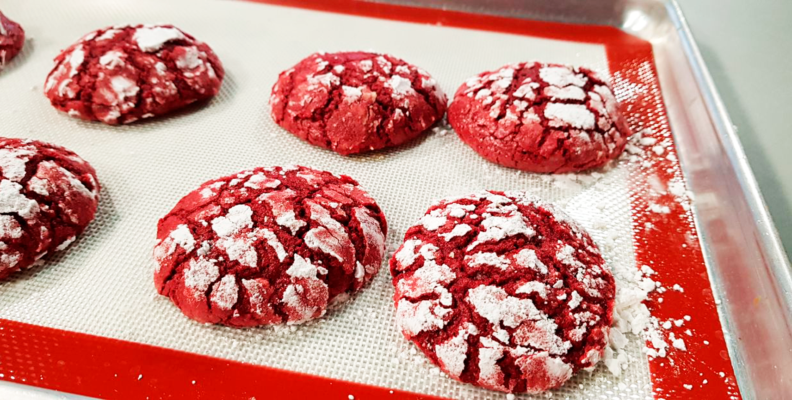

Origen
El red velvet o terciopelo rojo es ya todo un símbolo de bodas, San Valentín, la independencia de Texas y día de las madres por su icónico color, pero no muchos conocen sobre su curiosa procedencia.
Hoy lo encontramos en forma de macarrones, popcakes, helado, panqués y galletas, pero el red velvet comenzó siendo una estrategia publicitaria. Es decir, su creación data en el siglo XIX y XX, cuando la Gran Depresión y la Segunda Guerra Mundial habían dejado en quiebra cientos de negocios; fue entonces que un panadero incorporó colorante rojo a sus creaciones reposteras, mientras que otros dicen que los panaderos hacían jugo de remolacha para darle color a sus pasteles y mantener la humedad de los bizcochos. Esto sin duda fue una movida inteligente de mercadotecnia que elevó las ventas y logró ser una tendencia entre pastelerías.
El mayor auge del pastel red velvet fue en los años 30 y 40’s, sin embargo “Magnolias de Acero” fue la película que volvió a posicionar este sabor en el mundo repostero y hoy en día, no hay amante del chocolate que no se enamore de esta única creación ¡Anímate a probarlo!